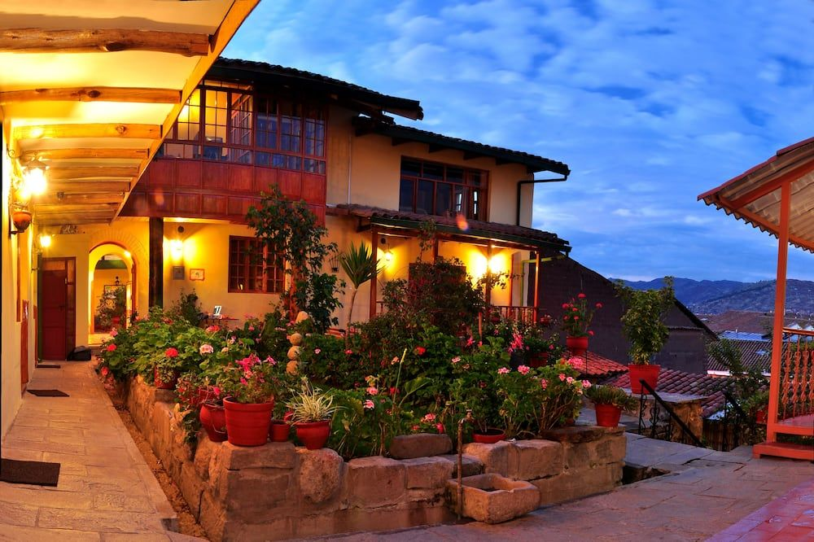

Hospedaje Valle del Mantaro nació como un negocio familiar en el centro de Huancayo, con apenas tres habitaciones y el deseo de recibir a los visitantes como en casa.
Hoy contamos con ocho habitaciones para viajeros solos, parejas, familias y grupos que llegan a conocer el valle: Torre Torre, el Cerrito de la Libertad, Ingenio, Concepción y la tradicional feria dominical de la Calle Huancavelica.

Brindar alojamiento cómodo, limpio y seguro a precios justos, con una atención cercana que haga sentir a cada huésped como en casa.
Ser el hospedaje familiar preferido de Huancayo, reconocido por su calidez y por promover el turismo en el valle del Mantaro.
Hospitalidad, honestidad, limpieza, respeto por nuestra cultura y compromiso con la comunidad.
Envíanos tu solicitud y te confirmamos la disponibilidad por teléfono o correo.
Solicitar reserva